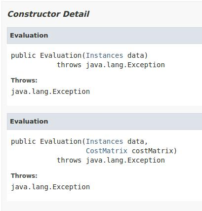
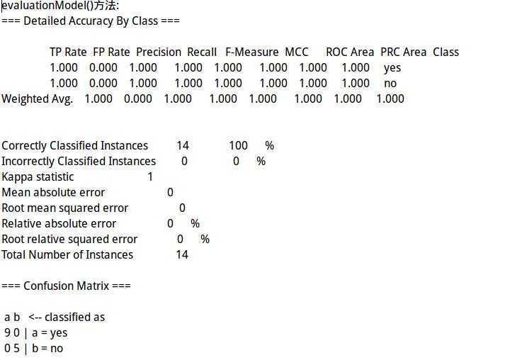
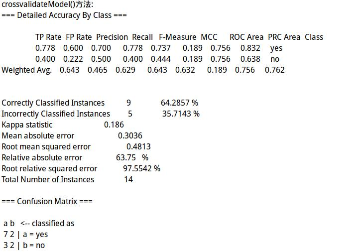

机器学习之Weka学习(03)-Evaluation类介绍
2016-07-03 by subondEvaluation类介绍
Evaluation类顾名思义，用来评价各种分类器（包括机器学习模型）的性能。Weka中有两个Evaluation类，分别位于weka.classifiers.evaluation.Evaluation和weka.classifiers.Evaluation 而且这两个类定义了同样的接口，其中evaluation包下的Evaluation类就是把所有的操作交给classifier包下的Evalution类来完成，也许为了能够适配旧版本已经编写的代码，就保留了classifier包下的 Evalution类，我们暂且不需要即可。下面我们就介绍weka.classifier.Evaluation类。
public class Evaluation extends java.lang.Object implemensts java.io.Serializable, Summarizable, RevisionHandler
构造函数
Evaluation类没有无参的构造函数，一般用Instances对象作为构造函数的参数。例如：
Evaluation eval = new Evaluation(data)data是训练集的数据，用来获取一些信息，并不用来评价分类器。

主要成员变量
- evaluationModel(Classifier classifier, Instances data)
- crossValidationModel()
如果训练集和测试集是分开的，可以使用evaluationModel方法，方法中的参数为：第一个参数是训练过的分类器，第二个参数是测试集的数据。
crossValidationModel方法的四个参数为：第一个参数是分类器，第二个参数是测试集的数据，第三个参数是交叉检验的次数（比较常见的是10），第四个参数是一个随机数对象。
应用实例
下面这个小程序用同一数据测试了两类方法的评价结果，源码地址如下Demo_evaluation
结果展示:
 参考资料
官方资料：
Instances类
Weka开发［3］－Evaluation类
http://quweiprotoss.blog.163.com/blog/static/408828832008103042734622/
Instances类介绍
Instances类是Weka中进行数据操作的对象，即需将所要处理的数据先存入并转化为Instances类的对象，然后进行其他操作。
public class Instances extends java.util.AbstractList<Instace> implemensts java.io.Serializable, RevisionHandler
也就是说Instances类是继承AbstractList类而来，并实现了Serializable,RevisionHandler接口。
构造函数

其构造函数可以实现实例的完整或部分拷贝，也可以创建新的实例，值得注意的是，其读入的数据格式为arff。关于arff的数据格式后续会有介绍。
主要成员变量
- numAttributes():返回属性总量
- setClassIndex(int):设置用于分类的属性
- instance(int):返回具体的实例
- firstInstance():返回第一个实例
机器学习之Weka学习(01)-简单分类器
Weka介绍
Weka的全名是怀卡托智能分析环境（Waikato Environment for Knowledge Analysis），是一款免费的，非商业化的，基于JAVA环境下开源的机器学习（machine learning）以及数据挖掘（data mining）工具。
它和它的源代码可在其官方网站下载。
WEKA作为一个公开的数据挖掘工作平台，集合了大量能承担数据挖掘任务的机器学习算法，包括对数据进行预处理，
分类，回归、聚类、关联规则以及在新的交互式界面上的可视化。
机器学习可以概括为“为使用正确的特征来构建正确的模型，以完成既定的任务”。任务，模型及特征是机器学习的三大”原料“。其工作流程一般如下：
1.学习问题，即由训练数据结合学习算法构建正确的模型
2.构建特征，即将原始数据根据所需构建特征，形成模型所识别的数据格式
3.完成任务，即借助正确的模型，对数据进行处理，得到输出。
简单的分类器实例
该分类器的数据处理过程如下：
1)读入训练数据
2)初始化分类器
3)使用训练数据训练分类器
4)使用测试样本测试分类器的学习效果
5)打印分类结果
初识线程
基本线程函数
以下主要介绍5个基本线程函数
pthread_create函数
pthread_join函数
当一个程序由exec启动执行时，称为初始线程或主线程的单个线程就创建了。其余线程则由pthread_create函数创建。
#include <pthread.h>
int pthread_create(pthread_t *tid, const pthread_attr_t *attr, void *(*func)(void *), void *arg);
返回：成功为0，出错为正的Exxx值
tid:一个进程内的每个线程都有一个线程ID标识，其数据类型为pthread_t(unsigned long int,即％lu)。如果新的线程创建成功，其ID通过tid指针返回。
attr:属性，每个线程都有许多属性（优先级，初始栈大小，是否成为一个守护线程等等）。若采用默认设置，可置attr参数为空指针（NULL）。
创建一个线程时最后指定的参数就是由该线程执行的函数func及其参数arg。注意func和arg的声明。func所指函数作为参数接受一个通用指针 (void *)，又作为返回值返回一个通用指针(void *)。另外该函数的唯一调用参数是指针arg，如果需要给函数传递多个参数，可以打包成一个结构，然后将结构的地址作为单个参数传递给函数。
#include <pthread.h>
int pthread_join(pthread_t *tid, void **status);
返回：成功为0，出错为正的Exxx值。
该函数的功能是等待一个给定线程终止
read more基本UDP套接字编程
UDP套接字编程模型
recvfrom和sendto函数
TCP编写的应用程序和UDP编写的应用程序之间存在本质的差别，其原因在于两者在传输层之间的差异：UDP是无连接不可靠的数据包协议，而不同于TCP提供的面向连接的可靠字节流。使用UDP编写的常见应用程序有：DNS(域名系统)，
NFS(网络文件系统)和SNMP(简单网络管理协议)。
典型的UDP客户/服务器程序的函数调用如下图1-1所示。

#include<sys/socket.h> ssize_t recvfrom(int sockfd, void *buff, size_t nbytes, int flags, struct sockaddr *from, socklen_t *addrlen); ssize_t sendto(int sockfd, const void *buf, size_t nbytes, int flags, const struct sockaddr *to, socklen_t addrlen); 均返回：若成功返回读或写的字节数，出错返回-1
前三个参数sockfd,buff和nbytes为：描述符、指向读入或写出的缓冲区的指针和读写字节数。
flags一般置为0。
sendto的to参数指向一个含有数据包接收者的协议地址的套接字地址结构，其大小由addrlen参数指定。recvfrom的from参数指向一个将由该函数在返回时填写数据报发送者的协议地址的套接字地址结构， 而在该套接字地址结构中填写的字节数则放在addrlen参数所所指的整数中返回给调用者。注意:sendto的最后一个参数是一个整数值，而recvfrom的最后一个参数是一个指向整数值的指针（即值-结果参数）。
注意recvfrom的最后两个参数类似accept的最后两个参数：返回时其中套接字地址结构的内容告诉我们是谁发送了数据报（UDP）或是谁发起了连接（TCP）。sendto的最后两个参数类似connect的最后两个参数： 调用时其中套接字地址结构被我们填入数据报发往（UDP）或预制建立连接（TCP）的协议地址。
Socket编程之函数学习篇
Socket编程涉及多个函数，本篇主要介绍其相关函数。
基本API函数
socket()函数——创建套接字
- domain：协议域
- type:指定socket类型
- protocol:指定通信协议
#include <sys/socket.h>
int socket(int domain, int type, int protocol);
成功返回sockfd;出错返回-1.
sockfd是一个socket描述符，它唯一标识一个socket。这个socket描述符跟其他文件描述符一样，后续的读写操作都需用到这个socket描述符。
创建socket的时候，可以指定不同的参数创建不同的socket描述符，socket()函数的三个参数分别为：
协议域规定了socket的地址类型，在通信中必须采用对应的地址类型。AF_INET(IPv4协议),AF_INET6(IPv6协议),AF_LOCAL(Unix域协议),AF_ROUTE(路由套接口)。
常见的socket类型有SOCK_STREAM(字节流套接口),SOCK_DGRAM(数据包套接口),SOCK_RAW(原始套接口),SOCK_PACKET,SOCK_SEQPACKET(有序分组套接口)等等。
常见的通信协议有IPPROTO_TCP(TCP传输协议),IPPROTO_UDP(UDP传输协议),IPPROTO_SCTP(SCTP传输协议),IPPROTO_TIPC等等
Socket编程之介绍篇
Socket，又称为“套接字”，是进程间进行通信的一种方式，即通过网络库的API函数实现分布在不同主机的相关进程间的数据交换。在TCP/IP网络应用中，通信的两个进程的主要模式是客户/服务器模式， 即客户向服务器发送服务请求，服务器接收到请求后，提供相应的服务。Socket编程接口是指从顶上三层（网际协议的应用层）进入传输层的接口，涉及两个方向上的传递：从进程到内核和从内核到进程，如图1-1所示。

LTE系统网络架构
网络架构概述
整个LTE网络是由核心网（EPC,Evolved Packet Core）和接入网（E-UTRAN）组成，如图1-1所示。核心网由许多逻辑节点组成，而接入网只有一个节点，即与用户终端（UE）相连的eNodeB。所有网元都通过接口相互连接，通过对接口的标准化，可以满足众多供应商产品间的互操作性。

与3G系统相比，LTE系统重新定义了系统网络架构，核心网和接入网之间的功能划分也随之有所变化，针对LTE系统架构，网络功能划分如图1-2所示。

Git学习手记
一、基础篇
1 指令介绍
git config --global user.name "username" #配置仓库参数，作为一个标志
git config --global user.email "useremail" #配置仓库参数，作为一个标志
git init #把当前目录变成git可管理的仓库
git add files #添加文件到暂存区
git diff file #查看文件的修改内容
git commit -m "提交说明信息” #提交文件到仓库
git status #获取当前仓库中文档的状态
git log #查看历史记录
git log -pretty=oneline #单行显示历史信息
git reflog #显示版本号
git checkout -- file #取出文件
git remote add origin <仓库地址> #添加远程仓库地址
git push origin <分支名1> #推送本地内容到远程仓库分支1
git pull origin <远程主机名> <远程分支名>:<本地分支名>
#取回远程主机某个分支，并与本地指定分支合并
git clone <仓库地址> #克隆远程仓库到本地仓库
git remote #查看远程仓库信息
git remote -v #查看远程仓库详细信息
2 版本回退
git reset --hard 版本号...
利用Pelican+Github pages搭建个人博客
说明：本教程使用的系统平台为ubuntu系统14.04。
Github pages
注册Github，并创建一个名为username.github.io的版本库。注意username为自己的用户名。
配置本地环境
- 安装Pelican和Markdown
Pelican是一套开源的使用Python编写的博客静态生成，可以添加文章和创建页面，可使用Markdown，reStructuredText和AsiiDoc的格式来书写，同时使用Disqus评论系统，支持 RSS和Atom输出，插件，主题，代码高亮等功能。
安装Pelican有很多方法，一般采用python的包管理器pip进行安装。
$ sudo apt-get install python-pip $ sudo pip install pelican $ sudo pip install markdown
创建博客目录，然后使用快速生成，具体如下：
$ mkdir blog $ cd blog $ pelican-quickstart
...
read more